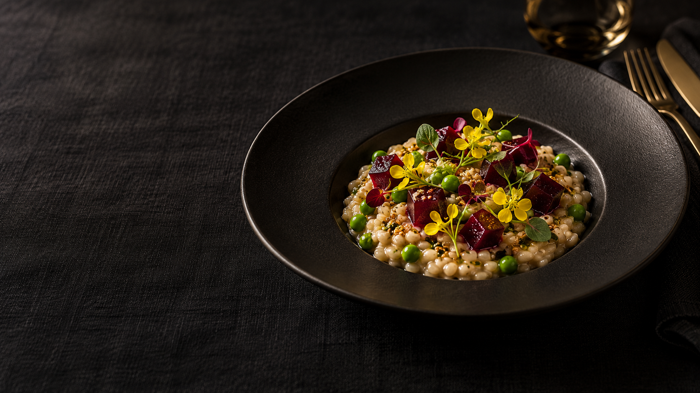

Du blé, du colza, une betterave et des pois : quatre cultures de plaine réunies dans une assiette qui n’a jamais existé.
01 · Blé tendre02 · Huile de colza03 · Betterave04 · Petits pois
L’instant signature
Le plat signature
Le colzotto des champs réunit du blé tendre mijoté comme un risotto, de l’huile de colza, des dés de betterave et des petits pois. Crémeux, croquant, entièrement végétal.

Une table imaginaire vous attend.
Réservation fictive : aucune table ne peut être réservée.